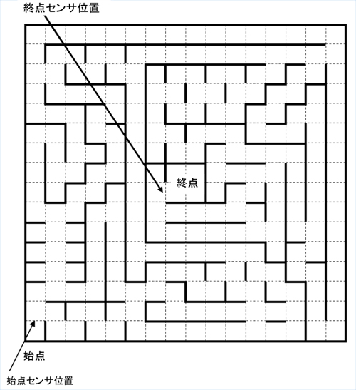
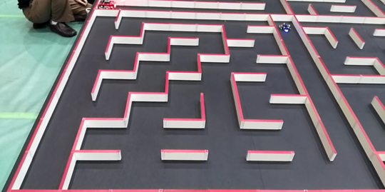
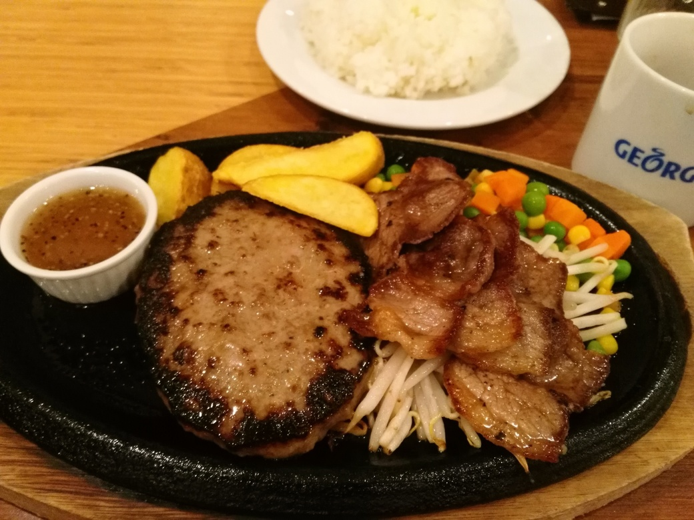
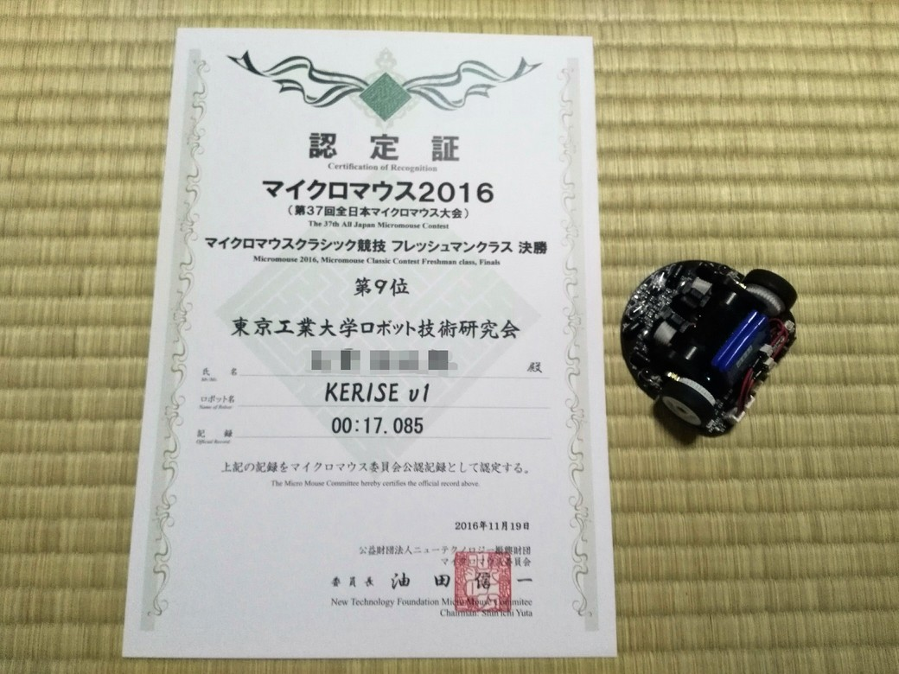

全日本マイクロマウス2016の結果報告
全日本マイクロマウス大会2016
今年春に先輩から誘われて8月ごろから設計を始めたマイクロマウス．
11月に開催された全日本マイクロマウス大会2016に出場してきました！
マイクロマウスとは
マイクロマウス
マイクロマウスとは，迷路を解いてゴールを目指す小さなロボットです．
自律型ロボットで，基本的には自動で動きます．
全日本マイクロマウス大会
全日本マイクロマウス大会は30年以上前から毎年開催されている歴史あるロボコンです．今では，東日本大会や学生大会など様々な場所でさまざまな大会が開かれています．
基本的なルール
マイクロマウスのルールは少し特殊です．
16x16マスの迷路に対し，一般的には5分間の持ち時間と5回の走行回数が与えられます．
始めにマウスは迷路を探索しながらゴールを目指し，ゴールに到達した後も他に最短経路がないかを探します．最短経路を見つけたら，スタートに戻り，見つけた最短経路を持ちうる最高の速度で走行し，ゴールを目指します．
最終的に記録になるのは最速走行のタイムであり，探索走行は関係ありません．如何に確実に最短ルートを導き，高速に走行するかを競います．


実際の迷路
僕が作ったマウス
マウスの外観
全長は72mmで幅は74mmなので，手のひらにすっぽり収まる大きさです．


動く様子
これは試走の様子です．
試走なので，8x8で走行しています．左下のマスがスタートで，右上のマスがゴールです．
最初に迷路を探索し，探索が終了したらスタートに戻ってきます．そしてスタートからゴールまでの最短ルートを走行します．
景気づけのハンバーグ
前日には，景気づけにちょっと高いハンバーグを食べました～
めちゃくちゃ美味しかったです！

結果

参加賞
フレッシュマンクラス予選 10位で決勝進出
僕は今年初めてマイクロマウスに参加したので，参加クラスはフレッシュマンクラスです．
フレッシュマンクラスの予選は，8x8の迷路で，3分の持ち時間で3回の走行を与えられます．
今年のフレッシュマンクラスの予選は1位から29位のマウスが決勝に進出しました．
- 参加登録：109台
- 出走：76台 (棄権：33台)
- 完走：48台
- 決勝進出：29台

決勝出場権取得証明書

予選タイム認定証
フレッシュマンクラス決勝 9位
決勝戦は，1つ順位を上げて9位に終わりました．

決勝タイム認定証
特別賞
今回僕は，フレッシュマンクラスで唯一，完全なる自律走行を試みました．(フレッシュマンクラスには自律賞はありませんが，今後の自律賞を視野に入れて試みました．)
自律賞とは，スタート後，所定の走行回数を競技者がロボットを操作することなく，走り切ったロボットに与えられます．普通ならば，1回走行するごとに，競技者がロボットの調整や走行モード選択などをしますが，自律賞を狙うロボットはそれなしで最後まで走り切らなければなりません．
マイクロマウスは，「自律型ロボット」なので，僕はその精神に則って，完全なる自律走行を目指しました．
今回，予選では完全なる自律走行を達成することができました．1度目の走行は探索走行，2回目の走行は最短走行，そして最後の3回目はそれより少し速度を上げて最短走行という形で，完璧に決めることができました．
しかし，決勝ステージでは，1回目の探索と2回目の最短走行は成功しましたが，3回目以降の最短走行は途中でクラッシュしてしまい，完全なる自律走行とはなりませんでした．
それでも，自律走行の試みを審査員に評価して頂き，特別賞をもらうことができました！

自律性を評価してもらった特別賞
まとめ
8月から怒涛の3か月間でマウスを作りました．ちょっと無理をしすぎたかもしれませんが，ロ技研のみんなや東京理科大Miceの方々のサポートもあり，なんとか大会に参加することができました．サポートしてくれた皆様，ありがとうございました．
来年は，エキスパートクラスで入賞を狙います！

東工大ロボット技術研究会から出場したロボットたち
次の記事